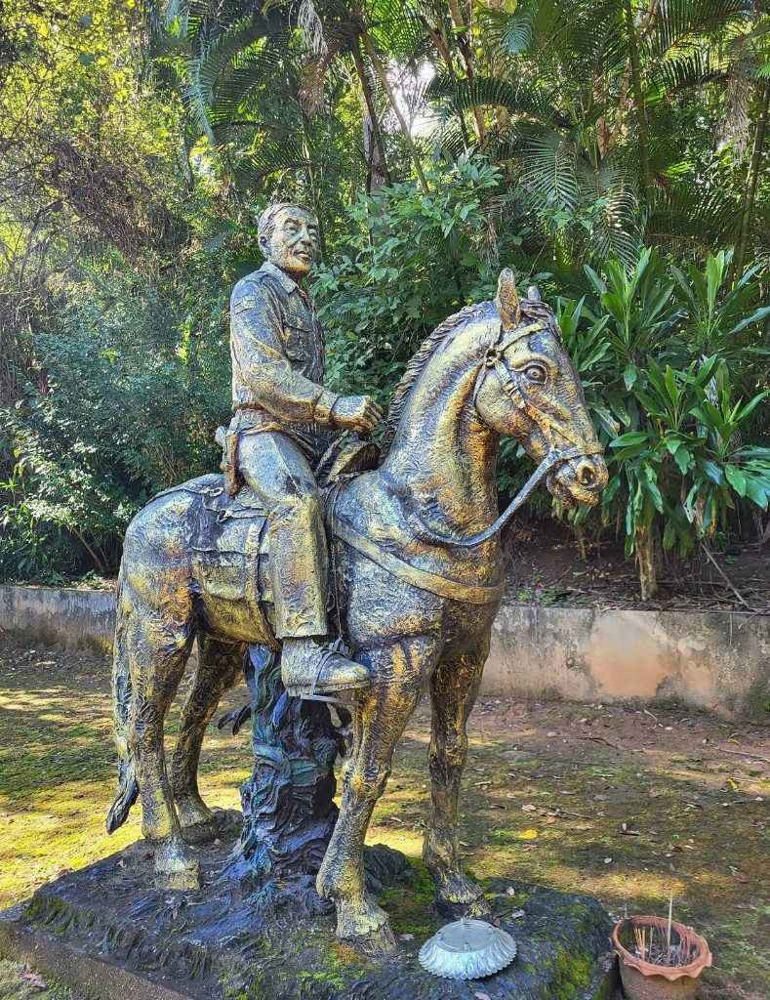

VISIT
參觀資訊

開放狀態
園區十二處據點並非全部開放內覽。目前可靠近觀看的是戶外地標、遺跡與史料展示室；多數舊時內室僅能從外側辨認位置。
開放時間
園區開放時間可能依現場管理情況調整，建議參觀前一天先行聯絡。實際開放範圍及導覽安排，以館方當日說明為準。
- 管理人員
- 082-129-2305 （傣族語言）
- 中泰客服
- 098-807-9227
資料提供者：館方聯絡窗口（學生整理）。今日是否仍適用：請以現場公告為準。
可參觀：
暫不開放：
建議參觀路線
若時間有限，建議走以下開放路線：
十二處據點的編號與相對位置，請見園區地圖。此為目前園區導覽整理，並非歷史上固定的正式名稱。
遊園須知
- 暫不開放的房舍請勿擅自進入，尊重現場管理。
- 土牢陰暗潮濕，靠近時請注意步履與光線。
- 銅像為紀念性雕像，拍照時請勿攀爬。
- 史料展示室現有史料展板，請依現場引導瀏覽，勿觸碰展品。
- 開放狀態以館方當日公告為準。